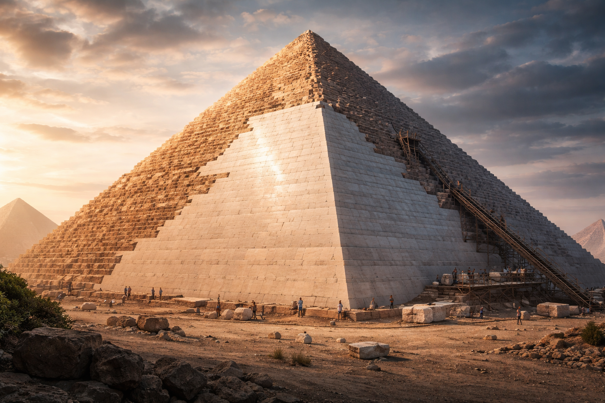

The Question We Almost Never Ask
The official story is elegant and reassuring: tombs, rituals, the afterlife immortalized in stone. A civilization honoring its rulers with unmatched devotion.
And that story may be partially true. But it also acts like a full stop—an answer so familiar that it quietly shuts down curiosity.
Because once symbolism is removed, something uncomfortable remains: the pyramids are engineered with a precision that ceremony alone does not require.
Inside the Structure, the Story Changes
Forget the desert. Forget the scale. Imagine only the interior.
Corridors narrow just enough to slow movement. Air pressure subtly shifts. Sound behaves in ways that feel deliberate.
You are not moving through open ceremonial space. You are being guided through a controlled environment.
- Passages that restrict airflow instead of welcoming it
- Chambers isolated rather than theatrically connected
- A vertical spine quietly linking the entire structure
These are not artistic choices. They are constraints—and constraints are how engineered systems operate.
Resonance Amplification: Where Geometry Starts Doing Work
Resonance is not mystical. It doesn’t require belief. It emerges automatically when shape, mass, and material interact.
Large stone volumes amplify certain frequencies, suppress others, stabilize temperature, and shape vibration patterns without any moving parts.
At scale, resonance stops being an effect and starts becoming a tool.
The Evidence That Doesn’t Disappear
Materials remember environments long after intent is forgotten.
Across pyramid systems—especially outside Egypt—we encounter anomalies that do not fit comfortably within a purely ceremonial explanation.
- Unusual mineral and residue concentrations
- Mercury and cinnabar found in Mesoamerican pyramid sites
- Extreme sealing methods clearly designed to control moisture
None of this proves purpose. But it strongly suggests behavior that deserves investigation rather than dismissal.

When Precision Enters the Process
Precision does not appear everywhere at once. It arrives late.
The mass is already complete. The angle is already fixed. Only then does refinement begin—carefully, deliberately, from the top downward.
The Least Exciting Explanation Might Be the Most Powerful
No lost machines. No ancient power plants.
Just passive systems—geometry doing what geometry always does when scaled up, sealed, and left alone.
Air moves. Sound stabilizes. Temperature equalizes. Moisture condenses or evaporates—because the structure makes it inevitable.
Why This Still Matters
Modern engineering is loud. It demands power, sensors, software, constant correction.
Passive systems are quieter. They rely on proportion, constraint, and patience.
If the pyramids worked this way, then design itself may be a technology we’ve underestimated—not lost.